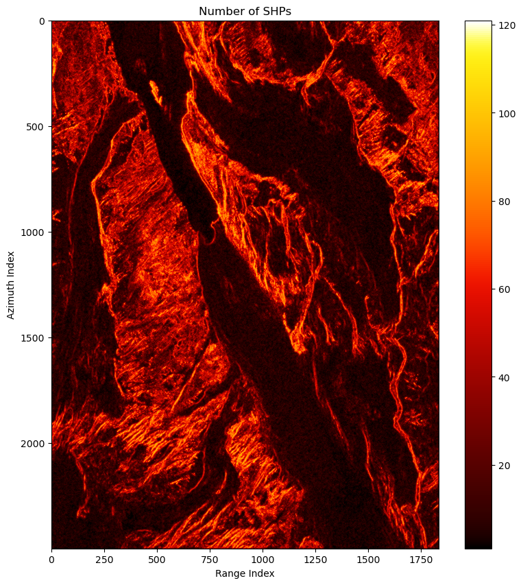
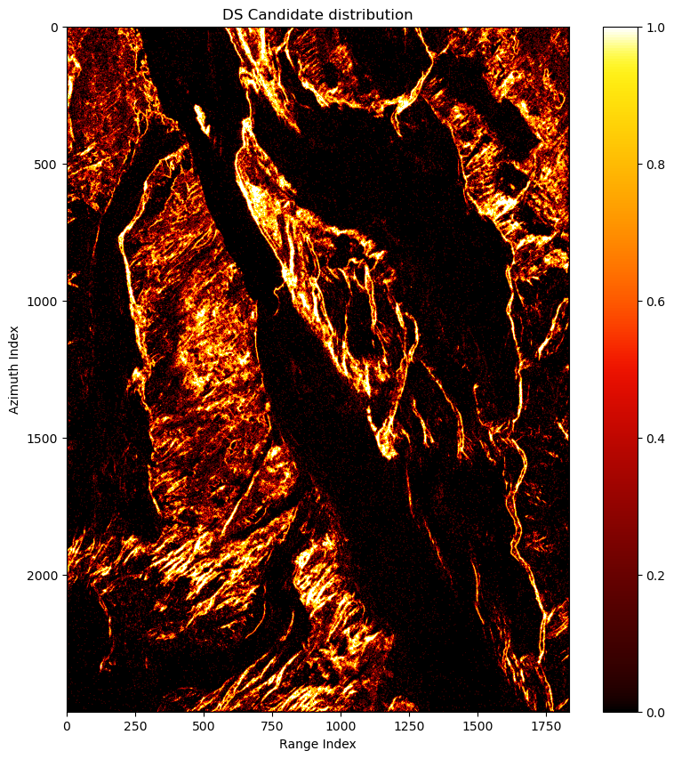
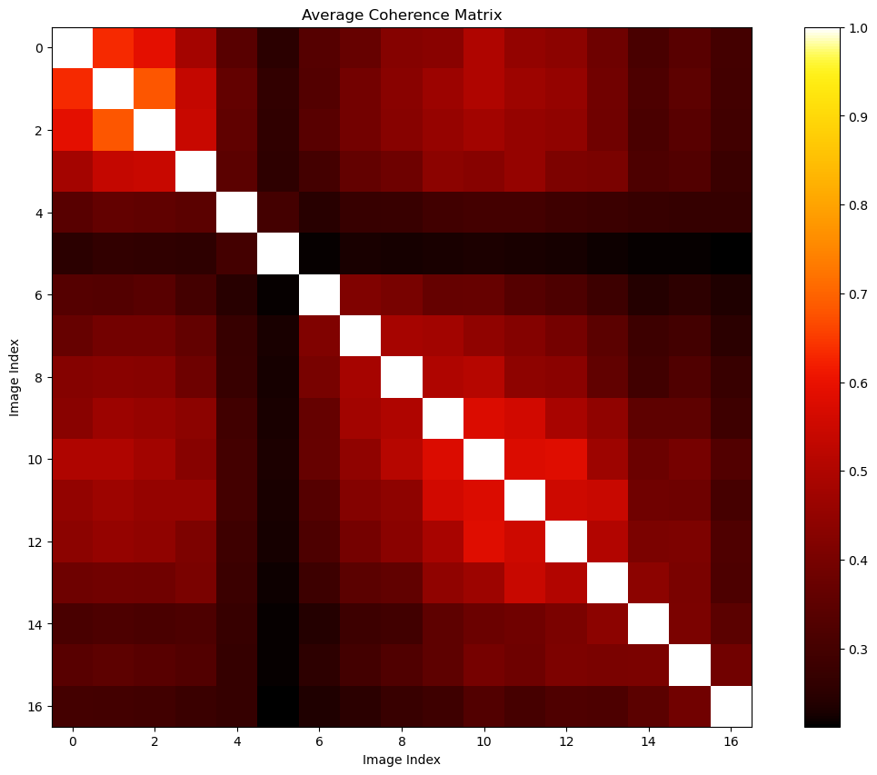
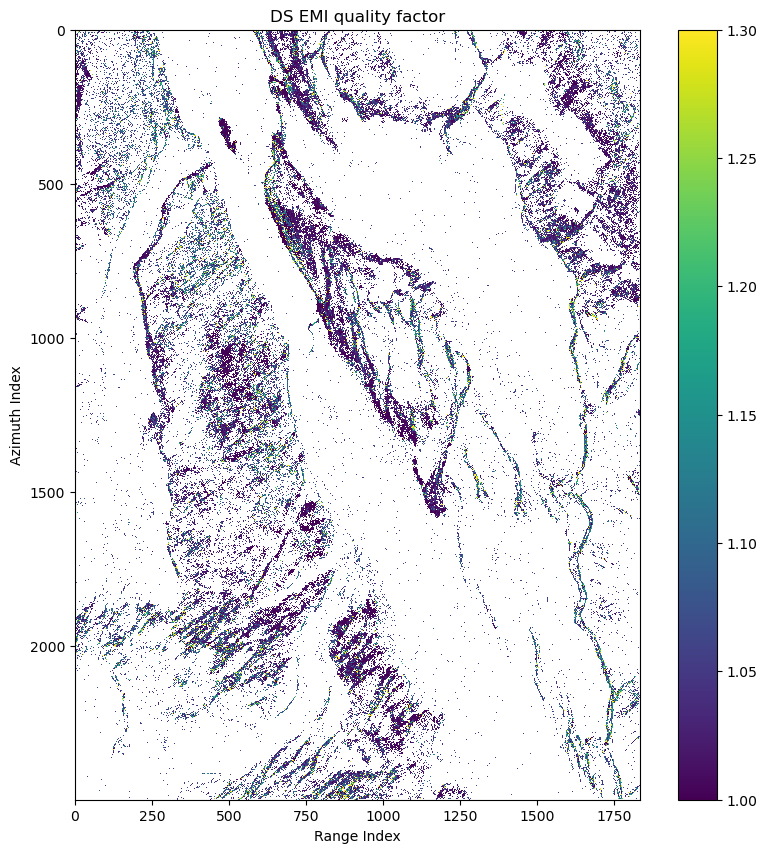
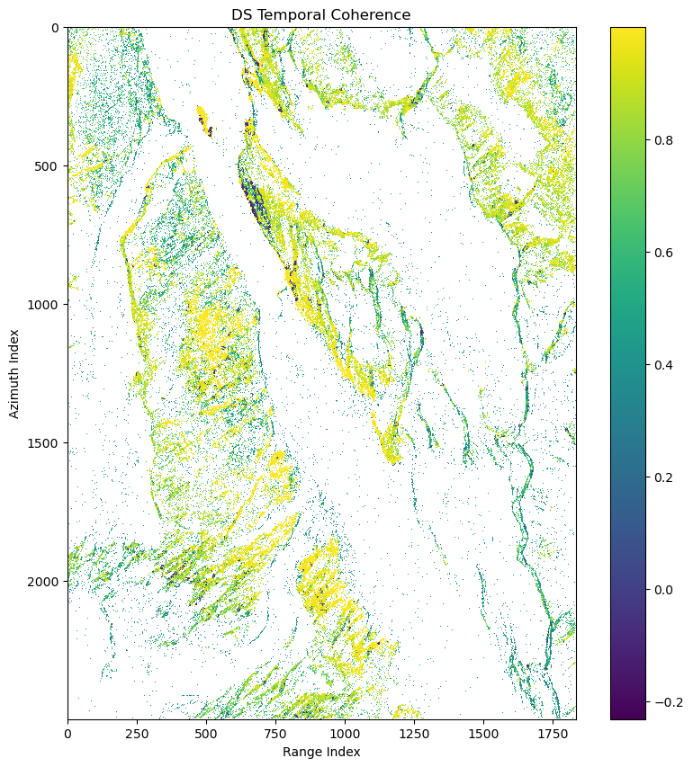
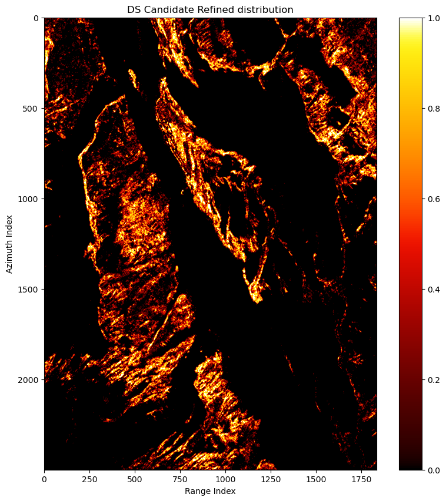

import numpy as np
from matplotlib import pyplot as plt
import colorcet
import cupy as cp
from cupyx.scipy.ndimage import median_filter
from decorrelation.shp import ks_test
from decorrelation.plot import bg_alpha
from decorrelation.co import emperical_co_sp, isPD
from decorrelation.pl import emi, temp_cohDS Processing
In this tutorial, we demostrate how to do standard DS processing with the decorrelation package.
Load rslc stack
rslc = cp.load('../../data/rslc.npy')
rslc.shape(2500, 1834, 17)Apply ks test
rmli = cp.abs(rslc)**2
sorted_rmli = cp.sort(rmli,axis=-1)az_half_win = 5
r_half_win = 5
az_win = 2*az_half_win+1
r_win = 2*r_half_win+1p = ks_test(sorted_rmli,az_half_win=az_half_win,r_half_win=r_half_win)[1]Select SHPs
is_shp = (p < 0.05) & (p >= 0.0)shp_num = cp.count_nonzero(is_shp,axis=(-2,-1))fig, ax = plt.subplots(1,1,figsize=(10,10))
pcm = ax.imshow(cp.asnumpy(shp_num),cmap=colorcet.cm.fire)
ax.set(title='Number of SHPs',xlabel='Range Index',ylabel='Azimuth Index')
fig.colorbar(pcm)
fig.show()
Select DSs
Here we select DSs candidate as pixels have more than 50 brothers.
is_ds_can = shp_num >= 50The number of DSs:
cp.count_nonzero(is_ds_can)array(740397)The DSs distribution:
fig, ax = plt.subplots(1,1,figsize=(10,10))
pcm = ax.imshow(cp.asnumpy(is_ds_can),cmap=colorcet.cm.fire)
ax.set(title='DS Candidate distribution',xlabel='Range Index',ylabel='Azimuth Index')
fig.colorbar(pcm)
fig.show()
Estimate coherence matrix
In order to save memory, here we only estimate coherence matrix on selected DSs:
ds_can_is_shp = is_shp[is_ds_can]
ds_can_idx = cp.where(is_ds_can)
ds_can_cov, ds_can_coh = emperical_co_sp(rslc,ds_can_idx,ds_can_is_shp)Plot the average coherence matrix:
ds_can_ave_coh = abs(ds_can_coh).mean(axis=0)ds_can_ave_coh.shape(17, 17)fig, ax = plt.subplots(1,1,figsize=(15,10))
pcm = ax.imshow(cp.asnumpy(ds_can_ave_coh),cmap=colorcet.cm.fire)
ax.set(title='Average Coherence Matrix',xlabel='Image Index',ylabel='Image Index')
fig.colorbar(pcm)
fig.show()
The coherence between the 5-th SLC and other SLC are bad. We may consider removing this image.
Phase linking
Here we apply the EMI method:
ds_can_ph, ds_can_emi_quality = emi(ds_can_coh)
ds_can_ph.shape, ds_can_emi_quality.shape((740397, 17), (740397,))ds_can_emi_quality_2d = cp.empty_like(is_ds_can,dtype=ds_can_emi_quality.dtype)
ds_can_emi_quality_2d[:] = cp.nan
ds_can_emi_quality_2d[is_ds_can] = ds_can_emi_qualityfig, ax = plt.subplots(1,1,figsize=(10,10))
pcm = ax.imshow(cp.asnumpy(ds_can_emi_quality_2d),interpolation='nearest',vmin=1,vmax=1.3)
ax.set(title='DS EMI quality factor',xlabel='Range Index',ylabel='Azimuth Index')
fig.colorbar(pcm)
fig.show()
ds_can_temp_coh = temp_coh(ds_can_coh,ds_can_ph)
ds_can_temp_coh.shape(740397,)ds_can_temp_coh_2d = cp.empty_like(is_ds_can,dtype=ds_can_temp_coh.dtype)
ds_can_temp_coh_2d[:] = cp.nan
ds_can_temp_coh_2d[is_ds_can] = ds_can_temp_coh
fig, ax = plt.subplots(1,1,figsize=(10,10))
pcm = ax.imshow(cp.asnumpy(ds_can_temp_coh_2d),interpolation='nearest')
ax.set(title='DS Temporal Coherence',xlabel='Range Index',ylabel='Azimuth Index')
fig.colorbar(pcm)
fig.show()
Refine DS candidate
Here we select DS candidate based on EMI quality factor and temporal coherence:
_is_ds_can_refined = (ds_can_emi_quality>=1.0) & (ds_can_emi_quality <1.2) & (ds_can_temp_coh > 0.7) & (ds_can_temp_coh <= 1.0)ds_can_refined_idx = tuple(idx[_is_ds_can_refined] for idx in ds_can_idx)
is_ds_can_refined = cp.zeros_like(is_ds_can)
is_ds_can_refined[ds_can_refined_idx] = Trueds_can_refined_coh = ds_can_coh[_is_ds_can_refined]
ds_can_refined_ph = ds_can_ph[_is_ds_can_refined]ds_can_refined_coh.shape(460076, 17, 17)Plot the average coherence matrix and refined DS candiate distribution:
ds_can_refined_ave_coh = abs(ds_can_refined_coh).mean(axis=0)
fig, ax = plt.subplots(1,1,figsize=(15,10))
pcm = ax.imshow(cp.asnumpy(ds_can_refined_ave_coh),cmap=colorcet.cm.fire)
ax.set(title='Average Coherence Matrix',xlabel='Image Index',ylabel='Image Index')
fig.colorbar(pcm)
fig.show()
fig, ax = plt.subplots(1,1,figsize=(10,10))
pcm = ax.imshow(cp.asnumpy(is_ds_can_refined),cmap=colorcet.cm.fire)
ax.set(title='DS Candidate Refined distribution',xlabel='Range Index',ylabel='Azimuth Index')
fig.colorbar(pcm)
fig.show()
We find the coherence matrix gets better and noisy pixels are moved.
Show the interferogram improvement
Here we select one interferogram to show the improvement:
ref_image = 1
sec_image = 101 look interferogram:
diff_2d = rslc[:,:,ref_image]*rslc[:,:,sec_image].conj()Multilook interferogram:
ml_diff_2d = median_filter(diff_2d,size=(az_win,r_win))Adaptive multilook interferogram on DS candidates:
ds_can_diff_2d = cp.empty_like(diff_2d)
ds_can_diff_2d[:] = cp.nan
ds_can_diff = ds_can_coh[:,ref_image,sec_image]
ds_can_diff_2d[is_ds_can] = ds_can_diffAdaptive multilook interferogram after phase linking on DS candidates:
ds_can_diff2_2d = cp.empty_like(diff_2d)
ds_can_diff2_2d[:] = cp.nan
ds_can_diff2 = ds_can_ph[:,ref_image]*ds_can_ph[:,sec_image].conj()
ds_can_diff2_2d[is_ds_can] = ds_can_diff2Adaptive multilook interferogram after phase linking on refined DS candidates:
ds_can_refined_diff_2d = cp.empty_like(diff_2d)
ds_can_refined_diff_2d[:] = cp.nan
ds_can_refined_diff = ds_can_refined_ph[:,ref_image]*ds_can_refined_ph[:,sec_image].conj()
ds_can_refined_diff_2d[is_ds_can_refined] = ds_can_refined_diffThe plot background:
plot_bg = rmli[:,:,0]
plot_bg = cp.asnumpy(plot_bg)
alpha = bg_alpha(plot_bg)Plot:
f,axes = plt.subplots(2,3,figsize=(11,10))
#axes[-1,-1].remove()
axes = axes.flatten()
xlabel = 'Range Index'
ylabel = 'Azimuth Index'
pcm = axes[0].imshow(cp.asnumpy(cp.angle(diff_2d)),alpha=alpha,interpolation='nearest',cmap='hsv')
axes[1].imshow(cp.asnumpy(cp.angle(ml_diff_2d)),alpha=alpha,interpolation='nearest',cmap='hsv')
axes[2].imshow(cp.asnumpy(cp.angle(ds_can_diff_2d)),alpha=1,interpolation='nearest',cmap='hsv')
axes[3].imshow(cp.asnumpy(cp.angle(ds_can_diff2_2d)),alpha=1,interpolation='nearest',cmap='hsv')
axes[4].imshow(cp.asnumpy(cp.angle(ds_can_refined_diff_2d)),alpha=1,interpolation='nearest',cmap='hsv')
for ax in axes:
ax.set(facecolor = "black")
axes[0].set(title='Orignal Interferogram')
axes[1].set(title=f'Multilook {az_win} by {r_win}')
axes[2].set(title=f'Adaptively multilook \n Interferogram on DS candidate')
axes[3].set(title=f'Adaptively multilook \n Interferogram after phase \n linking on DS candidate')
axes[4].set(title=f'Adaptively multilook \n Interferogram after phase \n linking on DS candidate refined')
f.colorbar(pcm,cax=axes[5],orientation='horizontal')
axes[5].set_aspect(2)